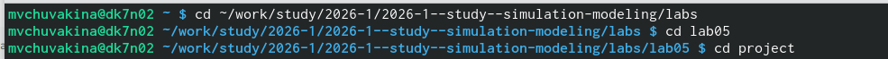
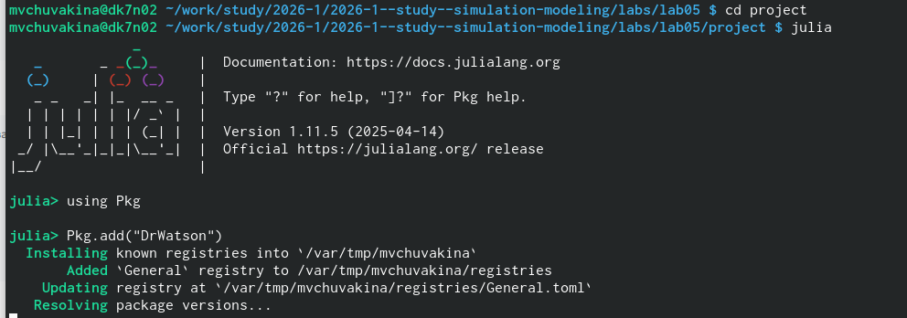
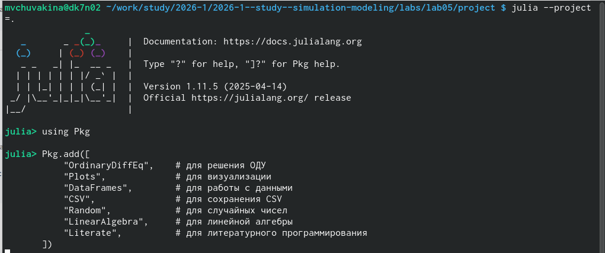
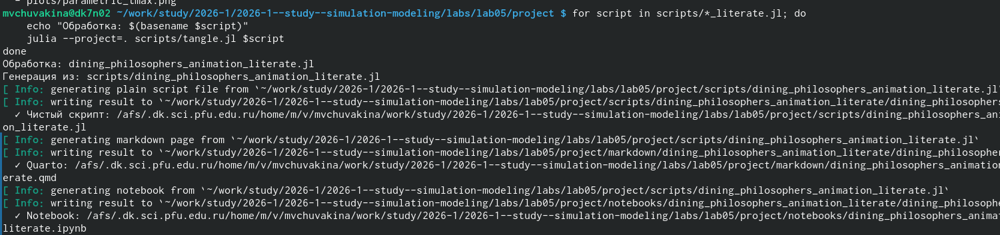
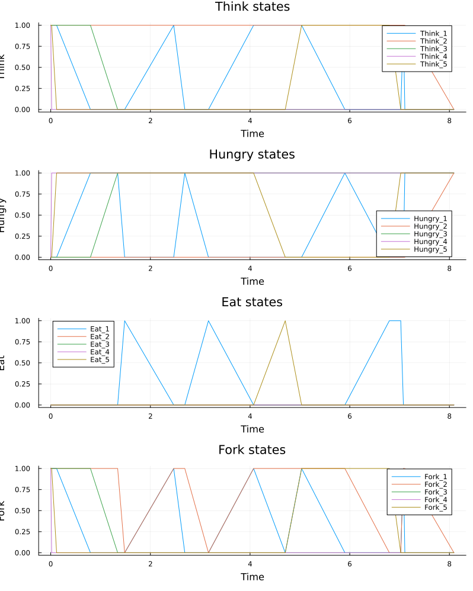
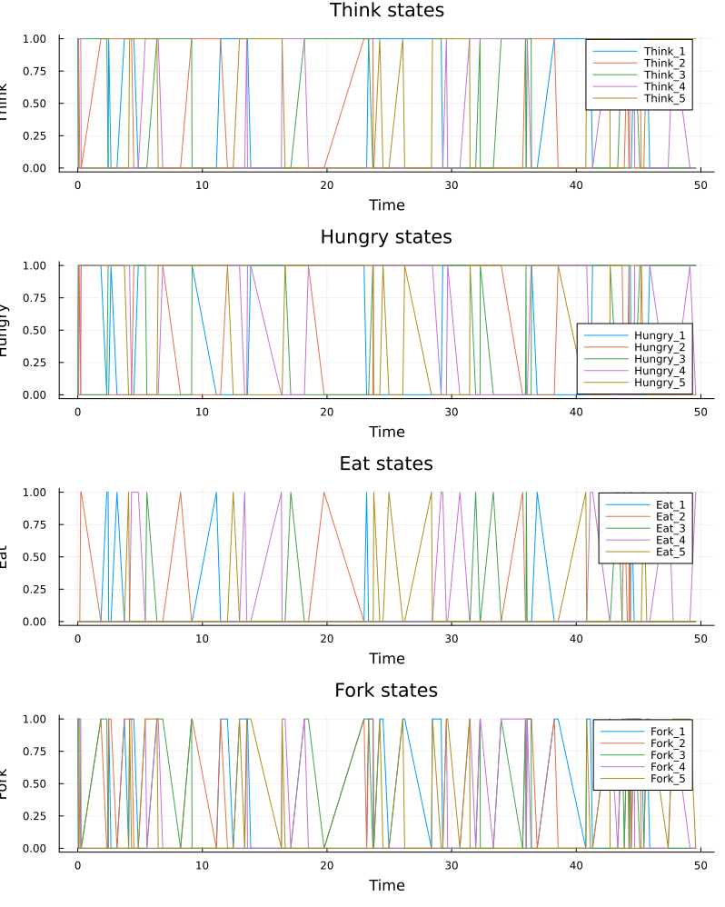
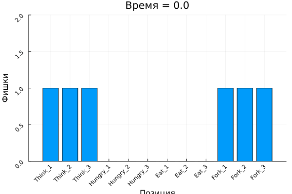
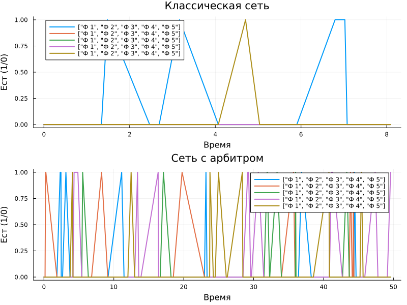
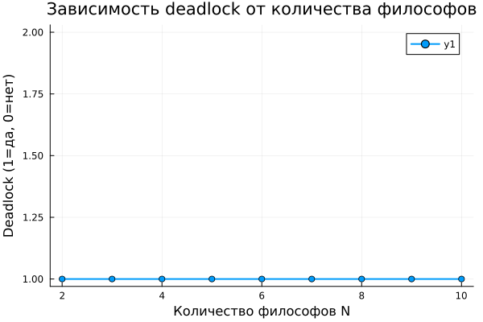
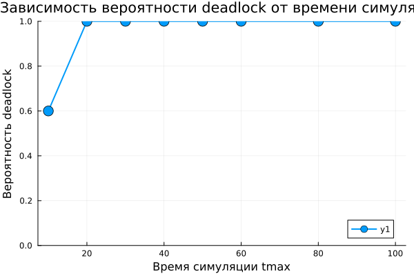

Изучить аппарат сетей Петри на примере классической задачи синхронизации «Обедающие философы» (Dining Philosophers), исследовать проблему взаимной блокировки (deadlock) и способы её предотвращения с использованием стохастического моделирования в Julia.
labs/lab05_petri
labs/lab05_petri/project
OrdinaryDiffEq.jl,
Plots.jl, DataFrames.jl, CSV.jl,
Random.jl, LinearAlgebra.jl,
Literate.jl, DrWatson и др.
Создан файл src/DiningPhilosophers.jl с определением: -
Структуры PetriNet - Функции
build_classical_network(N) - Функции
build_arbiter_network(N) - Функции
simulate_stochastic (алгоритм Гиллеспи) - Функции
detect_deadlock - Функции
plot_marking_evolution
Созданы и запущены скрипты:
dining_philosophers.jl - Базовый эксперимент
dining_philosophers_animation.jl - Анимация процесса
dining_philosophers_report.jl - Итоговый отчёт
Созданы литературные версии всех скриптов
(*_literate.jl) с подробными Markdown-комментариями.
С помощью scripts/tangle.jl сгенерированы: - Чистый код
в папку scripts/ - Jupyter notebooks в папку
notebooks/ - Quarto-документы в папку
markdown/
Сгенерированы производные форматы для всех литературных скриптов

report.qmd в папке
report/feat(lab05): полное выполнение лабораторной работы №5


Анимация наглядно показывает перемещение фишек между позициями.

Результаты: - Классическая сеть: все Eat_i падают до нуля (deadlock) - Сеть с арбитром: Eat_i колеблются, deadlock отсутствует

Вывод: При N = 1 deadlock невозможен, при N ≥ 2 возникает с вероятностью 1.

Вывод: С увеличением tmax вероятность deadlock стремится к 1. При tmax = 50 вероятность достигает 100%.
В ходе выполнения лабораторной работы:
Изучен аппарат сетей Петри — математический инструмент для моделирования дискретных систем.
Реализован модуль DiningPhilosophers.jl для
построения и анализа сетей Петри.
Построена классическая сеть Петри для задачи «Обедающие философы», демонстрирующая проблему взаимной блокировки (deadlock).
Построена модифицированная сеть с арбитром, предотвращающая deadlock.
Проведено стохастическое моделирование (алгоритм Гиллеспи) для обеих сетей.
Выполнена анимация процесса, наглядно показывающая перемещение фишек.
Проведены параметрические исследования:
Освоено литературное программирование с использованием Literate.jl.
Сгенерированы производные форматы: чистый код, Jupyter notebooks, Quarto-документы.
Подготовлен отчёт в форматах PDF и DOCX.
Результаты отправлены на GitVerse.
Работа позволила на практике освоить аппарат сетей Петри для моделирования параллельных процессов и закрепить навыки работы с языком Julia.